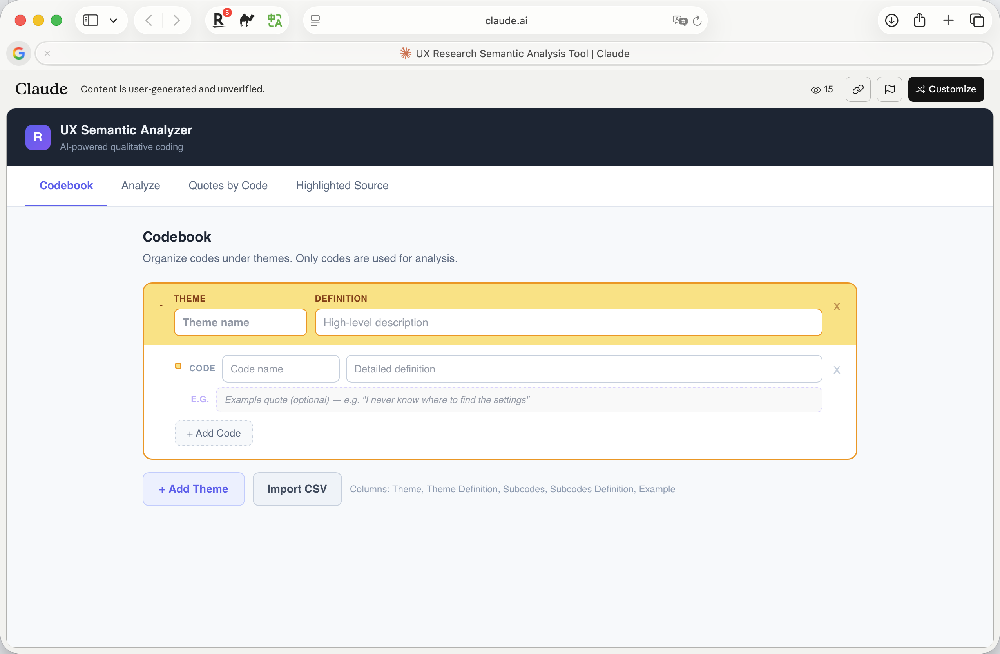
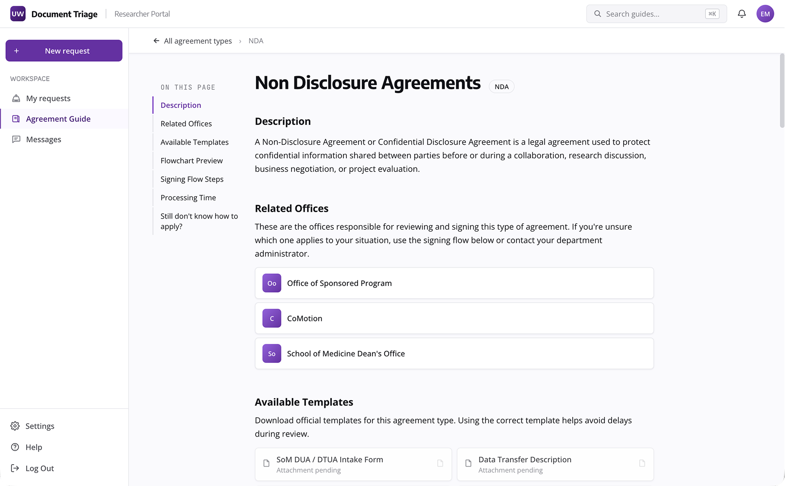
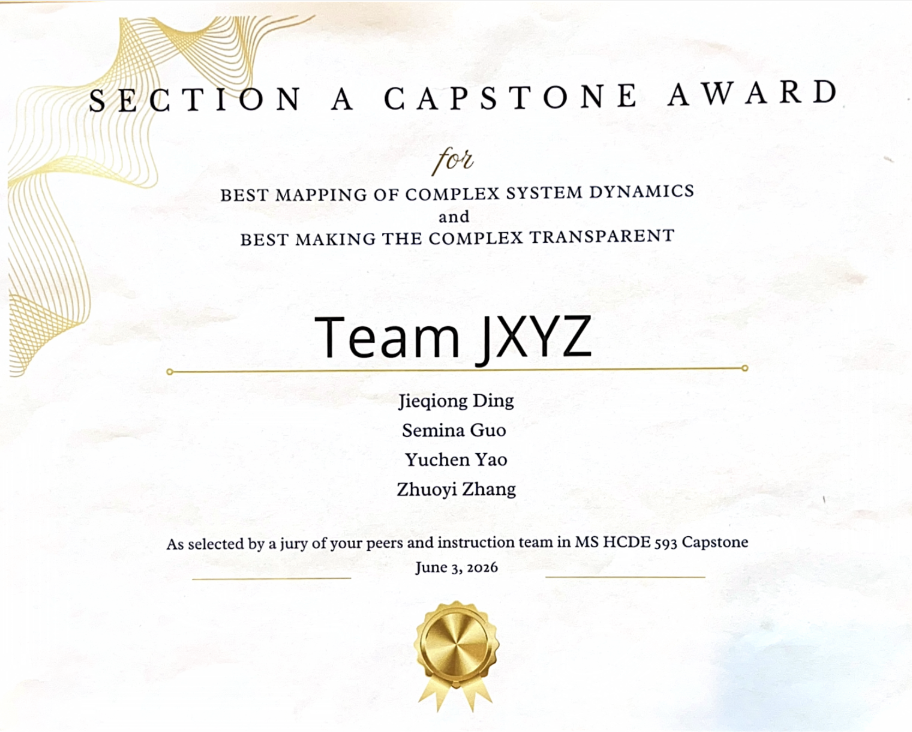

From 0 to 1 — AI-Enhanced
Agreement Routing for
University Administration
UW CoMotion handles hundreds of MTAs, NDAs, and Data Use Agreements annually. Routing them to the right office depended entirely on institutional memory — invisible, fragile, and gone when people left.
Agreement routing at UW runs on institutional memory. That memory is invisible, fragile, and disappears when people leave.
"The messy part is when an agreement is not getting to the right unit. An agreement that belongs at CoMotion has been sent to OSP and nobody can figure out where it should belong."
— CoMotion Staff, Stakeholder Interview
UW's research operation generates hundreds of cross-institutional agreements each year — MTAs, NDAs, Data Use Agreements — each reviewed by different offices. CoMotion, OSP, CoE, and SoM all have distinct scopes, but no shared rulebook. The routing logic lives in a few people's heads and a patchwork of outdated email threads.
Gets bounced between offices. Forced to self-learn each institution's rules. Four months in and still doesn't know who signs what.
"Three offices later, I still didn't know who was supposed to sign it."
Half the day spent redirecting requests that landed in the wrong inbox. No contact map. No shared routing guide.
"Half my day is telling people they're in the wrong place."
After 11 interviews and 11 email case analyses, we traced the chaos to three structural root causes:
No unified classification rules. "What counts as research vs. service" relies entirely on tacit expertise — only experienced staff know to look past the external label.
After submission, the agreement enters a black box. Staff sometimes can't explain routing decisions made by predecessors — because nothing was ever documented.
Routing logic exists in three places at once: scattered across office websites, buried in internal policy PDFs, and locked inside senior staff's heads. The knowledge is there — in no format anyone can maintain or hand off.
A two-portal system that separates defining the rules from following them.
Admins build and maintain routing logic in a visual, node-based canvas. Researchers follow it through a guided intake wizard. The two sides connect through a one-way publish library — admins control what researchers see, and changes sync immediately. Routing logic finally becomes a shared institutional asset, not a private cheat sheet.
Three months of field research — four offices, eleven interviews, eleven email cases.
Mapped routing flows for CoMotion, OSP, CoE, SoM from official sources. Found each office documents its own rules in isolation.
4 staff members (CoMotion Director, OSP Asst VP, SoM Sr. Director, CoE Research Director) — validated flows, surfaced pain points.
7 PIs and PI assistants from School of Medicine — focused on the initial triage moment and where confusion first appears.
11 real routing email threads shared by stakeholders — triangulated interview findings with evidence of confusion in the wild.
Recruited through CoMotion Licensing Associate. Criteria: recent submission, routing confusion, cross-office contact.
Developed a shared Codebook across interview transcripts and email records. Qualitative coding identified recurring structural patterns.
We built a Claude Artifact to accelerate thematic coding
Custom annotation tool that runs Codebook-based coding on interview transcripts and email text — 3–4× faster than manual, consistent across team members. View Artifact →


Research confirmed the three root causes — and pointed to three design directions:
Help users understand their situation before they act. Move classification decisions off the user and onto the system.
Make ownership explicit at every stage. Status should be visible without anyone needing to follow up.
Turn routing rules into a shared, updatable record that survives personnel change.
Four decisions — each one defines what we are and what we are not building.
Two portals, not one unified system
Admins need to author complex branching logic — a rule-writing task. Researchers need a simple, guided step-by-step experience. A single shared system would either overwhelm one group or constrain the other.
More to build and maintain — but each side evolves independently without breaking the other.
Node-based canvas, not an AI chatbot or static form
Routing logic is branching, conditional, and contextual — it can't live in a spreadsheet or be reliably reconstructed by AI at runtime. Non-technical admins need to author and edit it themselves.
Higher initial learning curve for admins — offset by guided onboarding and File2Flow.
File2Flow — AI drafts the canvas from existing documents
Routing knowledge already exists — scattered across office websites, buried in internal policy PDFs, and locked inside senior staff's heads. Asking admins to recreate it from scratch inside a new tool is too much friction to get started.
Draft quality depends on source document quality — admin review is always required.
Guided wizard, not a search bar or FAQ page
Researchers don't know what they don't know — they can't search for a term if they don't know the system's vocabulary. A FAQ page makes them read and self-classify, when they just need an answer.
No wizard if admins haven't published a workflow for the agreement type yet.
Turning private cheat sheets into a shared, editable institutional asset.
Nearly every experienced admin had drawn their own routing map — and it vanished when they left. The Admin Portal makes that map versionable, collaborative, and publishable.
File2Flow — AI drafts the canvas from a document or URL
PDF / URL, multimodal image extraction → sourceText
Extract definition + signing process; force-expand all branches
Label each step: DEF / DEC / ACT / PPL
Fill predecessorId for each node from source text
Strict JSON → normalizeAiGraph → editable canvas

Four node types make routing logic readable
Definition Node
One per workflow. Sets the agreement type's scope — the entry point for the entire decision tree.
Decision Node
Judgment question + multi-condition branches. The core routing logic unit — inline-editable.
Action Node
Specific next steps for each routing outcome: forms to submit, offices to contact, materials needed.
Handler Node
Names the responsible office or contact. Admin controls whether researchers can see this.
Not just "where to go" — but why, and what to prepare.
The Researcher Portal consumes whatever Admins publish. It always reflects the latest routing logic — no manual syncing, no stale guides.
Agreement Knowledge Library
One searchable place for every agreement type's definition, responsible office, typical timeline, and FAQs. The self-serve reference that used to live in a senior staff member's inbox.
Guided Intake Wizard — Core
Step-by-step questions drawn from the published workflow canvas. Tells researchers not just where to go, but why — shifting classification off the user and onto the system. "Unsure" options prevent dead ends for edge cases.

Core value validated. Onboarding is the real barrier — not the concept.
Key Takeaways
- Both admin and researcher participants validated the tool's core value — the barrier is onboarding, not the concept itself.
- The true routing failure happens on the admin side: researchers are often confident, but get bounced regardless because routing logic isn't defined.
- Unexpected finding: the tool has a secondary use case as training material for junior staff — not just a researcher-facing product.
What we shipped, what we learned.
Nearly every stakeholder had a different expectation of what this product should be. Aligning on scope before building — through structured stakeholder interviews — was the most impactful thing we did.
Vibe coding with Claude Code and Cursor collapsed the gap between design and development. We shipped polished UIs faster through PR than through Figma iterations — and expanded what designers could own.
A custom Claude Artifact for thematic coding did in 2 hours what would have taken 2 days. This isn't replacing judgment — it clears the path for it.

